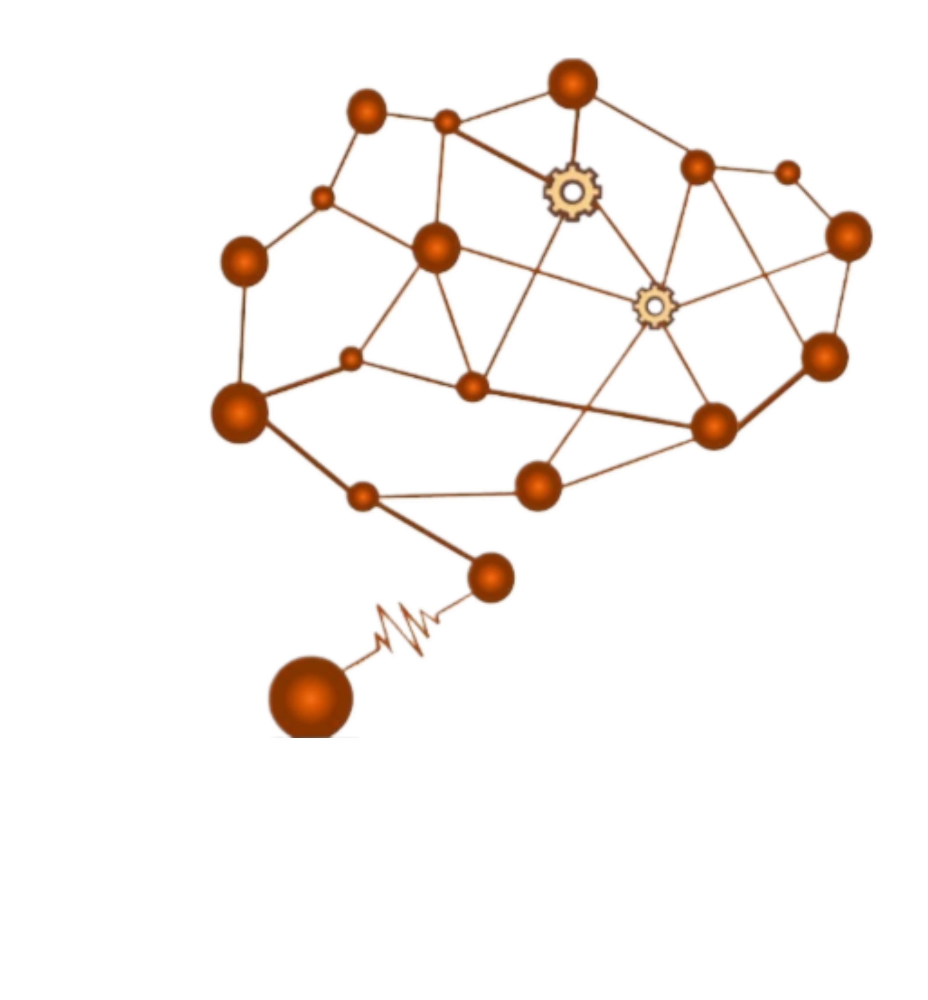
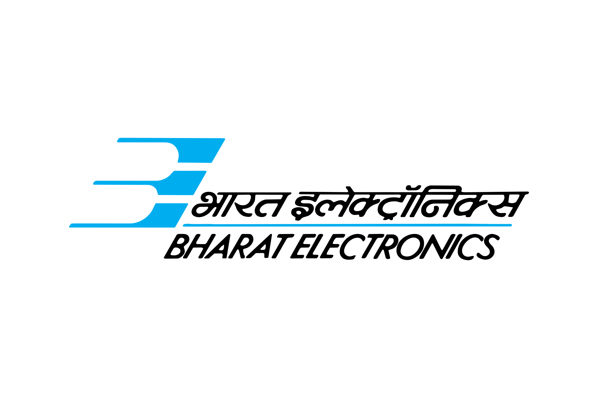

Resume
Resume
I am a communications engineer focused on building reliable, high‑throughput wireless links for 5G/6G. At IIT Delhi, my thesis develops an active RIS framework with GNN‑based implicit channel estimation, enabling dynamic propagation control and higher sum‑rate in MU‑MISO systems. I work end‑to‑end across PHY/DSP—OTFS for high‑mobility, LDPC/Turbo BER–SNR benchmarking, raised‑cosine pulse shaping, and SDR‑based adaptive modulation. Previously at TATA Advanced Systems and BEL, I delivered VoIP–SIP integrations across legacy TDM/IP domains, built radar simulators, and optimized arrays using genetic algorithms.
IIT Delhi Thesis

December 2024-Present
M. Tech Thesis
Machine Intelligence Signal And Network (MISN Lab), IIT DelhiSupervisor: Prof. Sandeep Kumar (IIT Delhi), Dr. Nethravathi KA (RVCE Bangalore), Bhishm Tripathi (Scientist G, DRDO)
- Developing a patentable advanced RIS design revolutionizes 6G networks by enabling dynamic, intelligent control of signal propagation, enhancing coverage, efficiency, and adaptability.
- Developing and validating an active RIS signal model to overcome the multiplicative fading in 6G wireless networks.
- Implementing GNN-based implicit channel estimation to efficiently predict CSI without explicit measurements.
- Optimizing beamforming and precoding matrix in MU-MISO, targeting higher sum-rate gain over conventional RIS.
Experience
 March 2022-September 2023
March 2022-September 2023
Executive Engineer
Tata Advanced Systems LimitedTata Advanced Systems Limited (TASL), a wholly-owned subsidiary of Tata Sons, is the strategic Aerospace and Defence arm of the TATA Group.
- Designed and developed the Ruggedized Interoperability Gateway (RIG) for the Indian Armed Forces, ensuring operational reliability in diverse climates across the Indian subcontinent.
- Innovated and demonstrated an Android calling application integrated into aircraft, showcasing initiative and self-motivation.
- Implemented hardware designs, schematic capture, layouts, and prototyping for the communication control system used by the Indian Army.
- Played a pivotal role in a 100 Cr Defence project aimed at enhancing operational efficiency, achieving a 25% reduction in the Bill of Materials cost.

December 2021-January 2022
Graduate Apprentice Trainee
Bharat Electroics LimitedBEL is a Navratna PSU under the Ministry of Defence, Government of India. It produces advanced electronic products for the Indian Army.
- Performed in-depth research and analysis to develop Radio Detection and Ranging Parameters Calculation Simulator using C, MATLAB, and MS Excel, achieving ~200% faster response time and saving 30% calculation time.
- Migration and enhancement of 16 by 16 and 32 by 32 planner antenna array prototypes, focusing on data integration and feature improvements.
- Implemented beam pattern of ROHINI Radar on Microsoft Excel, significantly speeding up calculations and enhancing efficiency.
- Recognized for delivering work of exceptional quality, leading to continued role as a trainee engineer.
Internship
Jnauary 2020-Febuary 2020
Winter Intern
Bharat Electronics LimitedBEL is a Navratna PSU under the Ministry of Defence, Government of India. It produces advanced electronic products for the Indian Army.
- Testing of Phase Control Module of Weapon Locating Radar's Antenna.
- Designed Software Simulator in Qt creator using C++ language.
- Working experience in RF and Microwave subsystem of Weapon Locating Radar.
June 2019-July 2019
Summer Intern
Central Electroics LimitedCentral Electronics Limited is a Govt. of India Enterprise under the Department of Scientific and Industrial Research (DSIR), Ministry of Science & Technology.
- Working experience of Digital Axel Counter of Indian Railways.
- Hand on experience in the usage of test instruments like digital storage oscillator, signal generator etc.
- The work that was done during the mentioned time frame was of exceptional quality.
Education
2024-Present
M.Tech Communication Engineering
Indian Institute of Technology Delhi, New Delhi- Related Coursework: Signal theory, Microwave Engineering, Microwave Engineering Lab, Digital Communications, Detection and Estimation Lab, Wireless Communication Lab, Minor Project (Communication) & Signal Processing 5G Lab.
- Grade: 7.78 CGPA (till 2nd Semester) First class distinction.
2017-2021
B.Tech Electronics and Communications Engineering
G.B. Pant Govt. Engineering College, Guru Gobind Singh Indraprastha University, New Delhi- Related Coursework: Signal and Systems, Digital Logic Design, Semiconductor Devices & Control System.
- Grade: 8.97 CGPA First class distinction.
2016-2017
CBSE 12TH
RPVV Surajmal Vihar, Delhi- Related Coursework: English, Physics, Chemistry, Maths & Biology.
- Percentage: 83.83% First class distinction.
2014-2015
CBSE 10TH
RPVV Surajmal Vihar, Delhi- Related Coursework: English, Hindi, Science, Maths, Social Science & Sanskrit.
- CGPA: 9.2 First class distinction.